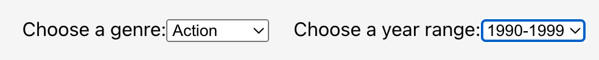
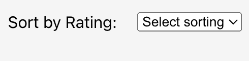
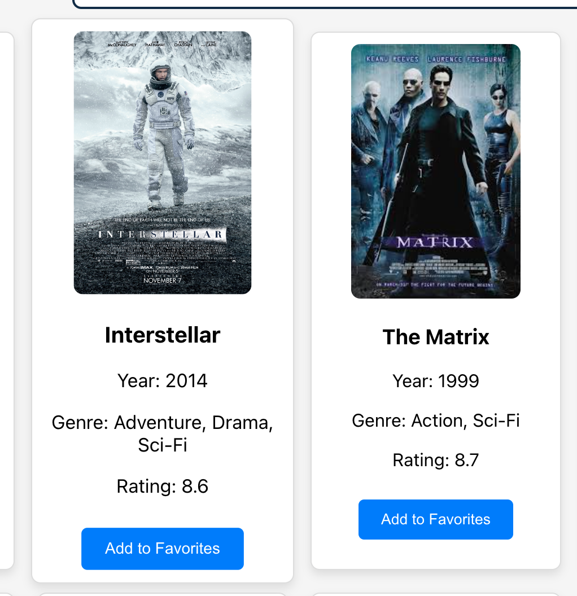
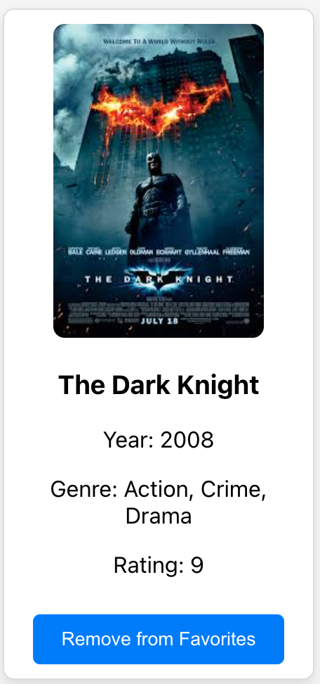
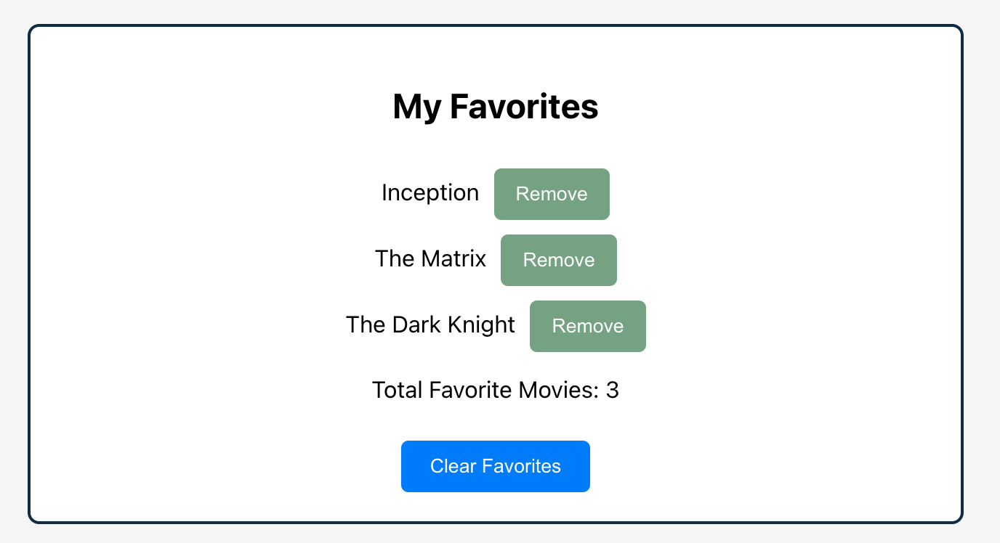
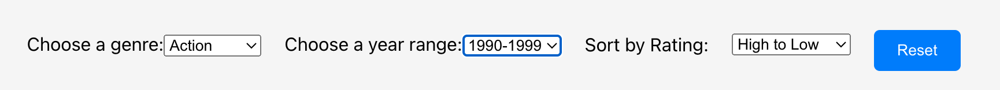

Movie Recommender Website
Individual Project
Project Overview
The Movie Recommender is a web application that allows users to discover, filter, sort, and save their favorite movies. It provides a user-friendly interface for movie enthusiasts to find movies based on their preferences and explore new titles.
Competitive Analysis
To inform the design and functionality of the Movie Recommender, a competitive analysis was conducted on three popular movie websites: IMDb, Rotten Tomatoes, and Metacritic. The analysis focused on several key aspects:
- Filtering Options: Allow users to filter movies based on genre, release year, or rating.
- Sorting Capabilities: Enable users to sort movies by release date, rating, or popularity.
- User Experience: Interface should be intuitive, with clear navigation and logical information layout.
- Movie Information Presentation: Provide detailed and easy-to-understand information, such as plot summary, cast list, and ratings.
- Social Features: Allow users to interact and share information via reviews, ratings, and social media.
| Factor | IMDb | Rotten Tomatoes | Metacritic |
|---|---|---|---|
| Filtering Options | ✔ | ✖ | ✖ |
| Sorting Capabilities | ✔ | ✔ | ✖ |
| User Experience | ✖ | ✔ | ✖ |
| Movie Information Presentation | ✔ | ✖ | ✔ |
| Social Features | ✔ | ✔ | ✖ |
Based on the analysis, several key insights were gained:
- IMDb excels in providing comprehensive filtering options, detailed movie information, and social features but could improve its user experience due to an overwhelming interface for some users.
- Rotten Tomatoes offers a clean and intuitive user interface with effective sorting capabilities and social features but lacks in-depth movie information.
- Metacritic provides detailed movie information and reviews but falls short in filtering options, social features, and overall user experience.
These insights were incorporated into the design and development of the Movie Recommender application, aiming to combine the strengths of each website while addressing their weaknesses.
Key Features
- Filter movies by genre and release year 
- Sort movies by rating 
- Add movies to favorites list 
- Remove movies from favorites list 
- Display total count of favorite movies 
- Reset filters and sorting 
Live Demo
Experience the Movie Recommender application live by visiting the deployed website:
https://movie-recommender-tau.vercel.app/
Learnings
Developing the Movie Recommender application was a valuable learning experience. It provided an opportunity to apply the concepts of filtering, sorting, and aggregation in a practical context. The project also reinforced the importance of user-centric design, focusing on creating an intuitive and visually appealing interface.
One of the challenges encountered during the development process was ensuring the compatibility and smooth interaction between different filtering and sorting options. Careful planning and testing were crucial to achieve a seamless user experience.
The competitive analysis conducted prior to the development helped in identifying key features and best practices in movie recommendation websites. Incorporating these insights into the Movie Recommender application enhanced its functionality and usability.
Overall, the Movie Recommender project demonstrated the power of combining front-end development skills with design principles to create an engaging and user-friendly application. It serves as a foundation for further exploration and potential enhancements in the future.